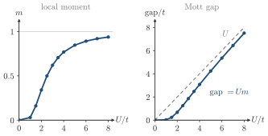
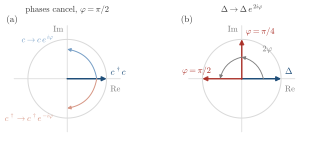

Advanced Quantum Materials 2027 · All lectures · Lecture notes
Session 1. Second Quantization, Mean-Field, and Spontaneous Symmetry Breaking
1.14 Worked example 2, magnetism
What changes when the electrons have spin and the interaction acts on one site? We will now see that for a repulsive interaction \(U\) the half-filled chain becomes a magnet in mean field, with a moment \(m\) that alternates from site to site and a gap \(Um\). For an attractive \(U\) we arrive, in Section 1.15, at a pairing term that breaks gauge symmetry.
\[\hat T|\Psi\rangle = |\Psi\rangle \;\Rightarrow\; \text{not magnetic}, \qquad \hat T|\Psi\rangle \neq |\Psi\rangle \;\Rightarrow\; \text{magnetic}. \tag{1.4}\]
\[H = -t\sum_n \left(c_n^\dagger c_{n+1} + \text{h.c.}\right) + V\sum_n c_n^\dagger c_n\, c_{n+1}^\dagger c_{n+1}. \tag{1.6}\]
The first equation is the test of Section 1.11b for a magnet, with \(\hat T\) the time reversal and \(|\Psi\rangle\) the ground state. The second is the spinless chain of Section 1.13, with the hopping \(t\) and the repulsion \(V\) between neighbors, whose mean field we now repeat for electrons with spin.
Let us now include again the spin degree of freedom, and let us change the interaction to an onsite Hubbard term between spin-up and spin-down electrons.
The Hubbard chain has a hopping that keeps the spin and an onsite interaction between the two spins,
\[H = -t\sum_{n,\sigma}\left(c_{n\sigma}^\dagger c_{n+1,\sigma} + \text{h.c.}\right) + U\sum_n c_{n\uparrow}^\dagger c_{n\uparrow}\, c_{n\downarrow}^\dagger c_{n\downarrow}, \tag{1.7}\]
and the magnetization of a site is
\[m = \langle c_\uparrow^\dagger c_\uparrow\rangle - \langle c_\downarrow^\dagger c_\downarrow\rangle. \tag{1.8}\]
For \(U>0\) the antiferromagnetic mean field of the half-filled chain gives a moment \(m\) that changes sign from site to site, and a gap \(Um\) in the spectrum, which approaches \(U\) at large \(U\).
The sign of \(U\) alone decides the physics. An attractive \(U<0\) drives superconductivity, which we discuss in Section 1.15, and a repulsive \(U>0\) drives magnetism, which is the topic of this section.
The mean-field decoupling is done in the same way as before, but now we apply it separately to \(\langle c_{\uparrow}^\dagger c_\uparrow\rangle\) and \(\langle c_\downarrow^\dagger c_\downarrow\rangle\), and we obtain a bilinear Hamiltonian with onsite energies that depend on the spin, through the magnetization \(m\) of (1.8). Self-consistency gives \(m=0\) automatically for \(U<0\), and a finite \(m\) for \(U>0\), which is a real magnetic solution.
The steps From the Hubbard term of (1.7) to the gap Um
We write \(n_{n\sigma}=c_{n\sigma}^\dagger c_{n\sigma}\). On each site the Hubbard term is decoupled as in Section 1.12,
\[U n_{n\uparrow}n_{n\downarrow} \;\to\; U\big(\langle n_{n\uparrow}\rangle n_{n\downarrow} + n_{n\uparrow}\langle n_{n\downarrow}\rangle - \langle n_{n\uparrow}\rangle\langle n_{n\downarrow}\rangle\big),\]
so an electron of spin up feels the onsite energy \(U\langle n_{n\downarrow}\rangle\), and an electron of spin down feels \(U\langle n_{n\uparrow}\rangle\).
At half filling, one electron per site, the simplest guess that breaks the symmetry between the two spins is a moment that alternates. On the even sites we take
\[\langle n_{\uparrow}\rangle=\tfrac12(1+m),\qquad \langle n_{\downarrow}\rangle=\tfrac12(1-m),\]
and the opposite on the odd sites. Then \(\langle n_\uparrow\rangle-\langle n_\downarrow\rangle\) is \(m\) on the even sites and \(-m\) on the odd sites. An electron of spin up feels \(U(1-m)/2=U/2-Um/2\) on the even sites and \(U/2+Um/2\) on the odd sites, and an electron of spin down feels the opposite. Up to the constant \(U/2\), each spin moves in a staggered potential \(\mp Um/2\), which is lower where that spin already has more weight.
This is the chain of the steps of Section 1.13 with \(V\delta n\) replaced by \(Um/2\). Each spin has the bands
\[E_\pm(k)=\frac U2\pm\sqrt{\Big(\frac{Um}{2}\Big)^2+4t^2\cos^2k},\]
so the gap at the zone edge is \(Um\). Self-consistency asks that the filled lower band gives back the same \(m\),
\[1=\frac U2\cdot\frac1\pi\int_{-\pi/2}^{\pi/2}\frac{dk}{\sqrt{(Um/2)^2+4t^2\cos^2k}},\]
which is the equation of the charge density wave with \(V=U/2\). It has a solution with \(m\neq0\) for every \(U>0\), exponentially small at small \(U\). At large \(U\) the moment goes to \(1\), so the gap \(Um\) approaches \(U\).
Let us now say which symmetry is broken here, using the formal definition in (1.4). Time-reversal symmetry reverses the direction of time and, together with it, every angular momentum in the system, including the spin. On the fermionic operators this means that it exchanges \(c_\uparrow^\dagger c_\uparrow \leftrightarrow c_\downarrow^\dagger c_\downarrow\). Since \(m\) in (1.8) changes sign under this exchange, a nonzero \(m\) means that the ground state does not pass the invariance test in (1.4), so it is a magnet by definition. More generally, this is a breaking of the continuous spin-rotational symmetry, and this continuous symmetry breaking is what gives rise to the gapless magnon excitations that appear in the table of Section 1.11b. We will study them in detail in Section 6.13, and in this session we only need the mean-field ground state itself.
Numerically, when we increase \(U\) a Mott gap opens in the spectrum. It grows linearly with \(U\) at large \(U\), and it comes with the formation of a real local moment on every site. Schematic 1.13 shows both, computed from the mean-field equations of this section.

g4_hubbard_chain.py

The interaction on each site and the magnetization of a site are
\[U\,n_{\uparrow}n_{\downarrow},\qquad m=\langle n_\uparrow\rangle-\langle n_\downarrow\rangle.\]
Here \(n_\sigma\) is the number of electrons of spin \(\sigma\) on the site. For an attractive \(U<0\) the self-consistent solution has \(m=0\). Why does a finite \(m\) not lower the energy?
Show the answers
- A. ✓ True
This is true. A negative \(U\) in (1.7) rewards a site that holds one electron of each spin. A moment moves electrons away from this configuration, so the energy goes up.
\[H = -t\sum_{n,\sigma}\left(c_{n\sigma}^\dagger c_{n+1,\sigma} + \text{h.c.}\right) + U\sum_n c_{n\uparrow}^\dagger c_{n\uparrow}\, c_{n\downarrow}^\dagger c_{n\downarrow}, \tag{1.7}\]
- B. ✗ False
This is false. Time reversal exchanges up and down and takes the complex conjugate. The Hamiltonian (1.7) does not change under both, for either sign of \(U\), so it keeps the symmetry in both cases. For \(U>0\) the same Hamiltonian has \(m\neq 0\) as a spontaneous solution.
\[H = -t\sum_{n,\sigma}\left(c_{n\sigma}^\dagger c_{n+1,\sigma} + \text{h.c.}\right) + U\sum_n c_{n\uparrow}^\dagger c_{n\uparrow}\, c_{n\downarrow}^\dagger c_{n\downarrow}, \tag{1.7}\]
- C. ✗ False
This is false. The hopping does not flip the spin, and the interaction depends only on the densities. So \(S_z\) commutes with \(H\) for any \(U\), positive or negative.
The sign of \(U\) decides whether the spins of a site prefer to be unpaired or paired.
The half-filled Hubbard chain is solved in mean field with an antiferromagnetic guess. The moment of a site is
\[m=\langle n_\uparrow\rangle-\langle n_\downarrow\rangle.\]
Here \(n_\sigma\) is the number of electrons of spin \(\sigma\) on the site. What is the gap of the mean-field spectrum?
Show the answers
- A. ✗ False
This is false. At \(U=3t\) the moment is \(m=0.62\) and the gap is \(1.86t\), not \(3t\). The gap reaches \(U\) only at large \(U\), where \(m\) goes to \(1\).
- B. ✗ False
This is false. At \(U=t\) the moment is \(0.03\) and the gap is only \(0.03t\). A gap of \(2t\) is the one of the dimer at \(U=0\), whose two levels are at \(\pm t\), while the chain at \(U=0\) has no gap.
- C. ✓ True
This is true. Each spin feels a staggered potential \(\mp Um/2\), which opens the gap \(Um\) at the edge of the zone. At \(U=3t\) this is \(3\times0.62=1.86t\).
Solve the antiferromagnetic mean field of the Hubbard dimer, two electrons on two sites joined by one bond, with the Hamiltonian (1.7). Take \(\langle n_{1\uparrow}\rangle=\langle n_{2\downarrow}\rangle=(1+m)/2\) and \(\langle n_{1\downarrow}\rangle=\langle n_{2\uparrow}\rangle=(1-m)/2\). Show that self-consistency gives \(m=\sqrt{1-(2t/U)^2}\) for \(U>2t\) and only \(m=0\) below. What are \(m\) and the mean-field energy at \(U=4t\)?
Solution
The electron of spin up feels \(U\langle n_{i\downarrow}\rangle\), which is \(U/2\mp Um/2\) on the two sites, so its Hamiltonian is
\[H_\uparrow=\begin{pmatrix}U/2-Um/2&-t\\-t&U/2+Um/2\end{pmatrix},\qquad E=\frac U2\pm\sqrt{\Big(\frac{Um}2\Big)^2+t^2}.\]
Its lower level has the weight \(\tfrac12(1+x)\) on site 1, with \(x=(Um/2)/\sqrt{(Um/2)^2+t^2}\), and the spin down has the mirror image. So the new moment is \(x\), and self-consistency asks
\[m=\frac{Um/2}{\sqrt{(Um/2)^2+t^2}}.\]
The value \(m=0\) always solves it. A solution with \(m\neq0\) needs \(\sqrt{(Um/2)^2+t^2}=U/2\), which gives \(m^2=1-4t^2/U^2\), so it exists only for \(U>2t\). The slope of the right side at \(m=0\) is \(U/2t\), so the moment appears at \(U=2t\). This threshold belongs to the dimer, since the half-filled chain of the steps above has a moment for every \(U>0\), \(0.03\) at \(U=t\).
The levels of each spin are then \(0\) and \(U\). The energy is the sum of the two filled levels minus \(U\sum_i\langle n_{i\uparrow}\rangle\langle n_{i\downarrow}\rangle=U(1-m^2)/2\), which gives \(-U(1-m^2)/2=-2t^2/U\) for every \(U>2t\). At \(U=4t\) we get \(m=\sqrt{3}/2=0.87\) and the energy \(-0.50\,t\), while the exact energy is \(-0.83\,t\).
So mean field gives a moment that the exact singlet of two sites does not have, and it still stays above the exact energy, since it is variational. This is the comparison of Schematic 1.11, and the onset at \(U=2t\) is what the try-it box below finds in the notebook.
Notebook check-in: session1.ipynb, “The interacting Hubbard dimer” (Core) and “Magnetic order driven by interactions in a chain” (Core). The two challenges are “Gap opening of the Hubbard model in a chain” (Challenge) and “Gap opening in the Hubbard model on the honeycomb lattice” (Challenge).
Start with the two-site case, the dimer, to see how the self-consistency loop converges in a small system that you can check by hand. Then go to the extended chain and finally to the honeycomb lattice, which uses the finite islands of Section 1.10 with interactions. Look at how the Mott gap opens and grows with \(U\).
Try it. Run the dimer for \(U\) from \(0\) to \(10\) and read the value of \(U\) where the magnetization leaves zero. It is close to \(U=2t\). Check that the gap is already \(2t\) at \(U=0\), since the two levels are at \(\pm t\).
1.15 Worked example 3, superconductivity and broken gauge symmetry
Can a mean-field term change the number of electrons? We will now see that it can, when it holds two annihilation operators, and that such a term breaks gauge symmetry. Let us go back to (1.7) with \(U<0\). The mean-field decoupling that we used above always keeps one creation operator and one annihilation operator together, but nothing forces this choice. We can also take an expectation value of two creation operators, or of two annihilation operators.
The expectation value of two annihilation operators is
\[\Delta = \langle c_i c_j\rangle. \tag{1.9}\]
Under the gauge transformation
\[c \to c\, e^{i\varphi}, \qquad c^\dagger \to c^\dagger e^{-i\varphi}, \tag{1.10}\]
it turns as \(\Delta\to e^{2i\varphi}\Delta\), while every term \(c^\dagger c\) stays the same. So a mean-field state with \(\Delta\neq0\) breaks the gauge symmetry, and it has no fixed number of electrons, only a fixed parity.
This anomalous term, which is called a “pairing” term, looks qualitatively different from all the terms that we wrote so far, but it is a valid mean-field term. In the self-consistent solution, \(\Delta\) is zero for repulsive interactions and can become nonzero for attractive ones, and this is the superconducting order parameter. The notebook of this session has no section on this example. To solve it numerically we need the Bogoliubov-de Gennes formalism, which we build in Section 5.8.
Why does this order break gauge symmetry? A gauge transformation multiplies each annihilation operator by \(e^{i\varphi}\), as in (1.10). Any term built from one creation operator and one annihilation operator, \(c^\dagger c\), is invariant under (1.10), since the two phases cancel. However, the pairing term in (1.9) is built from two annihilation operators, or two creation operators, so under the same transformation it gets a phase \(e^{2i\varphi}\), or \(e^{-2i\varphi}\), which does not cancel. For this reason a superconductor with \(\Delta \neq 0\) breaks the gauge symmetry of the Hamiltonian spontaneously, which is the case of broken gauge symmetry in the classification of Section 1.11b.
This is directly connected to the puzzle of Section 1.5 about a fluctuating number of electrons. To break gauge symmetry and to lose a fixed number of particles are, physically, the same statement. A mean-field superconductor does not have a fixed number of electrons, only a fixed parity. Schematic 1.14 shows the two cases in the complex plane.

A gauge transformation acts on the operators as
\[c\to c\,e^{i\varphi},\qquad c^\dagger\to c^\dagger e^{-i\varphi}.\]
We take \(\varphi=\pi/2\). By which factor does the pairing term \(c_ic_j\) change?
Show the answers
- A. ✗ False
This is false. Each operator gets \(e^{i\pi/2}=i\), so the product gets \(i^2=-1\). The factor \(1\) appears only for \(\varphi=0\) or \(\varphi=\pi\).
- B. ✓ True
This is true. Each operator gets a factor \(e^{i\varphi}\), so the product gets \(e^{2i\varphi}=e^{i\pi}=-1\). Only multiples of \(\pi\) leave the term unchanged, so the pairing term is not gauge invariant.
- C. ✗ False
This is false. The factor \(i\) is what one operator gets at \(\varphi=\pi/2\). The term has two operators, and for \(\varphi=\pi/4\) we would get \(e^{i\pi/2}=i\), and not for \(\pi/2\).
The pairing term changes by \(e^{2i\varphi}\), so its phase is a physical quantity.
The pairing amplitude is \(\Delta=\langle c_ic_j\rangle\), real and positive before the transformation, the dashed arrow. A gauge transformation acts as
\[c\to c\,e^{i\varphi},\qquad c^\dagger\to c^\dagger e^{-i\varphi}.\]
Which picture shows \(\Delta\) after the transformation with \(\varphi=\pi/4\)?
Show the answers
- A. ✗ False
This is false. A turn by \(\pi/4\) is the factor \(e^{i\varphi}\) of one operator. The pair has two operators, so it gets \(e^{2i\varphi}=e^{i\pi/2}\), a turn by \(\pi/2\).
- B. ✗ False
This is false. Only a term \(c^\dagger c\) stays the same, since its two phases cancel. In \(c_ic_j\) the two phases add, and \(\Delta\) stays the same only for \(\varphi=0\) or \(\varphi=\pi\).
- C. ✓ True
This is true. Each operator gets \(e^{i\pi/4}\), so \(\Delta\) gets \(e^{i\pi/2}=i\) and turns by \(\pi/2\), to the imaginary axis. Its size \(|\Delta|\) does not change.
- The Hubbard model (1.7) and its mean-field magnet are solved again in Section 6.3, and Section 6.6 gives the Stoner criterion for the onset of magnetism.
- At large \(U\) the local moments of this section couple through superexchange, and Section 6.8 derives the Heisenberg model that describes them.
- The pairing term (1.9) is the start of Session 5. Section 5.7 writes the gauge transformation (1.10) in explicit form, and Section 5.8 builds the BdG Hamiltonian.